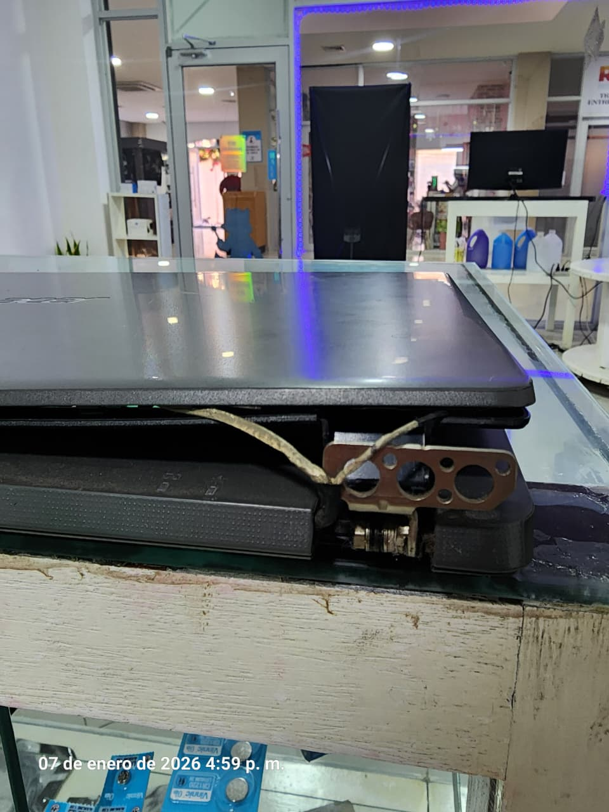
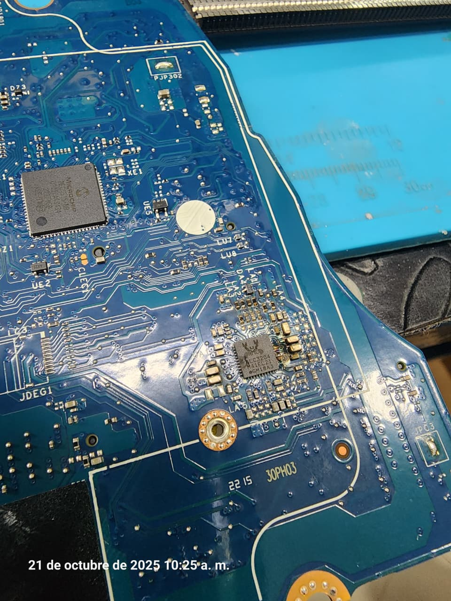
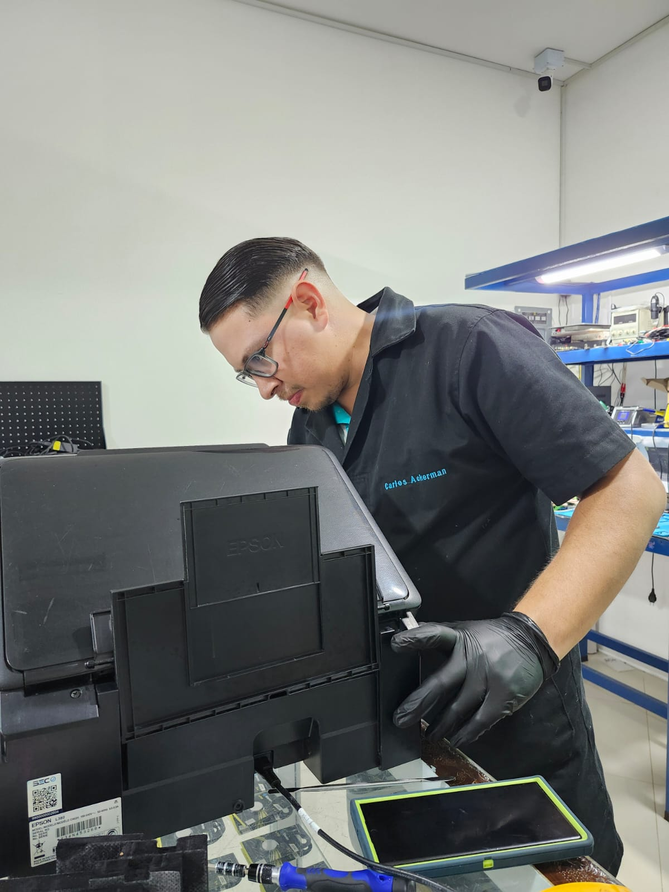

Reparación de Bisagras
Solucionamos daños en bisagras de laptops, evitando problemas en la pantalla y estructura del equipo.

Instalamos redes LAN y Wi-Fi seguras para oficinas y hogares.

Brindamos soluciones confiables con servicio técnico especializado.

Solucionamos daños en bisagras de laptops, evitando problemas en la pantalla y estructura del equipo.

Reparamos fallas en tarjetas madre, circuitos y componentes electrónicos de tus equipos.

Diagnóstico, mantenimiento y reparación de impresoras para un funcionamiento óptimo.
Le asesoraremos para el ahorro de costes y el uso de las últimas tecnologías.
Configuración profesional de recursos compartidos, impresoras, teléfonos y más.
Reparación y mantenimiento de PC y MAC, optimización de software y hardware.
¿Perdiste tus datos? No te preocupes, los recuperamos de forma segura.
Diseñamos e instalamos redes para hogares y empresas con soporte profesional.
Protección contra virus y amenazas para equipos, archivos y sistemas.
Ofrecemos instalación y licenciamiento de software original adaptado a tus necesidades.
Instalamos sistemas de videovigilancia modernos para hogares y negocios.
Le asesoraremos para el ahorro de costes y el uso de las últimas tecnologías.
Configuración profesional de recursos compartidos, impresoras, teléfonos y más.
Reparación y mantenimiento de PC y MAC, optimización de software y hardware.
¿Perdiste tus datos? No te preocupes, los recuperamos de forma segura.
Diseñamos e instalamos redes para hogares y empresas con soporte profesional.
Protección contra virus y amenazas para equipos, archivos y sistemas.
Ofrecemos instalación y licenciamiento de software original adaptado a tus necesidades.
Instalamos sistemas de videovigilancia modernos para hogares y negocios.